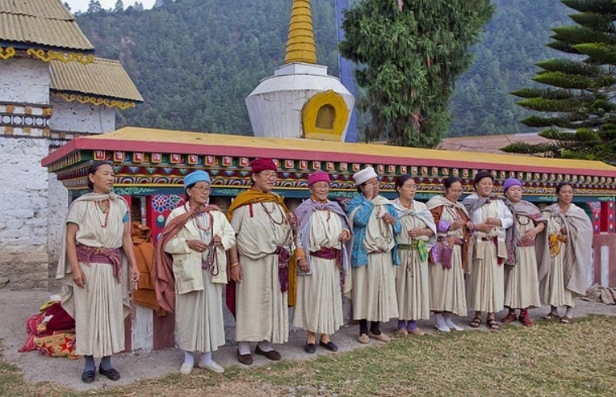

Sherdukpen Tribe Traditional Dress:
The Sherdukpen tribe, primarily found in West Kameng, has a rich heritage. Their traditional clothing plays a central role in festivals like Choskar. Sherdukpen men wear woolen garments called Pehkan, which offer warmth in the region’s cool climate Sherdukpen traditional attire is adorned with unique geometric patterns, often symbolizing tribal mythology. The Sherdukpen hat, a significant accessory, is worn by men.